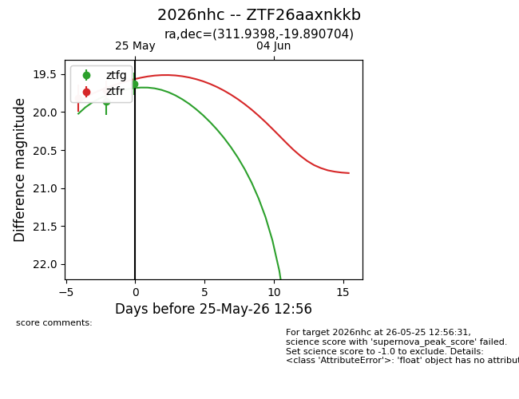
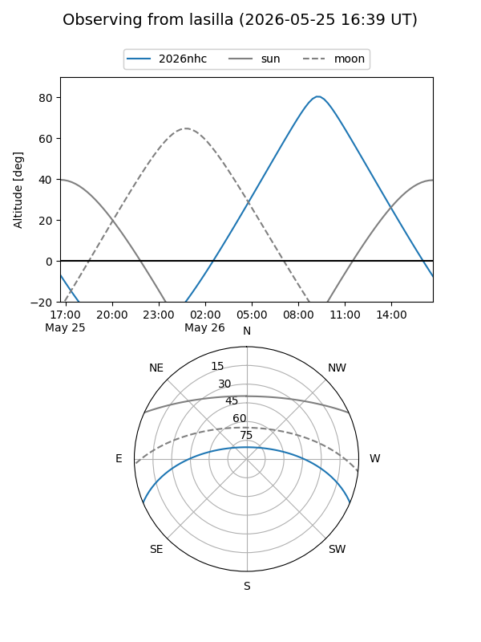
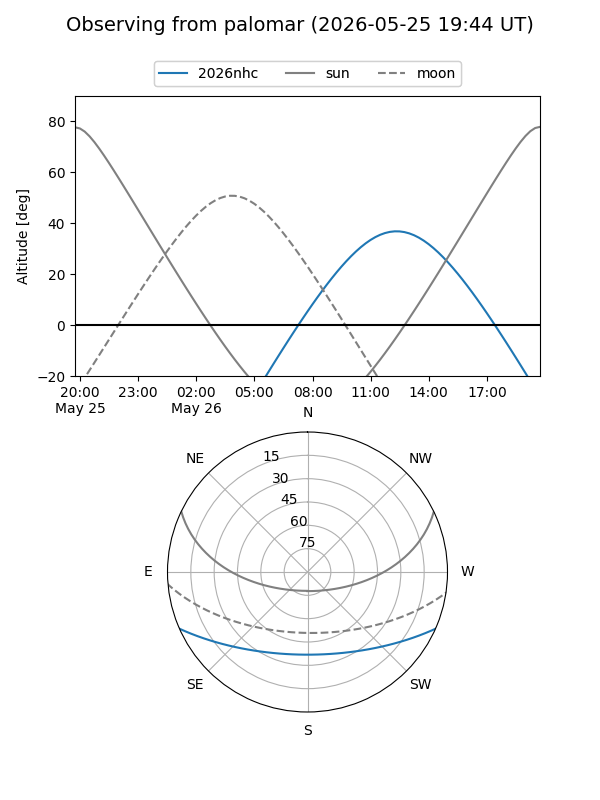
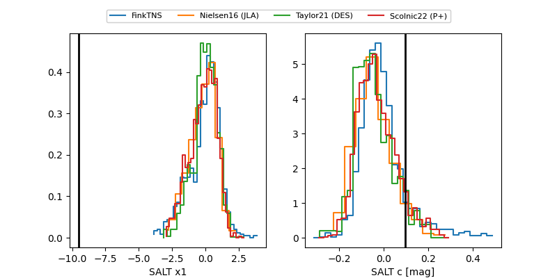

2026nhc
Target 2026nhc at 2026-05-25 12:58
Aliases and brokers:
lsst-FINK: link
lsst-Lasair: link
lsst-ALeRCE: link
ztf-FINK: link
ztf-Lasair: link
ztf-ALeRCE: link
TNS: link
YSE: link
alt names
ZTF26aaxnkkb (ztf,fink_ztf)
2026nhc (tns,yse)
Coordinates:
equatorial (ra, dec) = 311.9398,-19.89070
equatorial (HMS+DMS) = 20:47:45.55,-19:53:26.53
galactic (l, b) = (26.3795,-34.18717)
Flags:
TNS confirmed: nan
Photometry:
last ztfg=19.63, ztfr=19.71
2 ztfg, 2 ztfr detections
Lightcurve

Visibility


Additional plots
